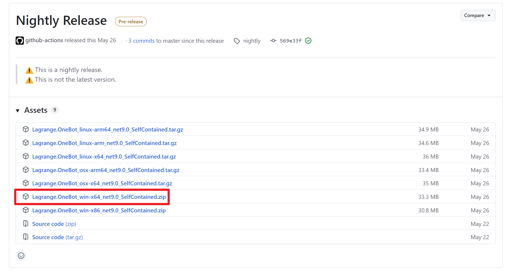
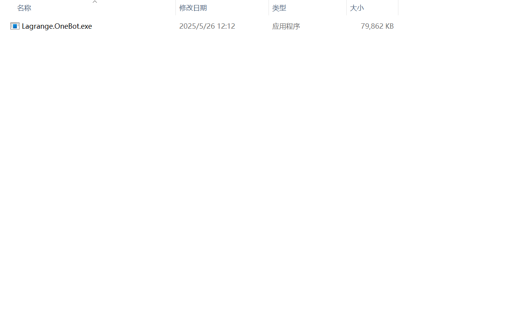
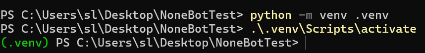
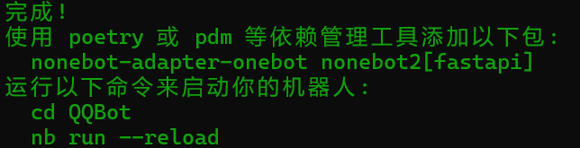
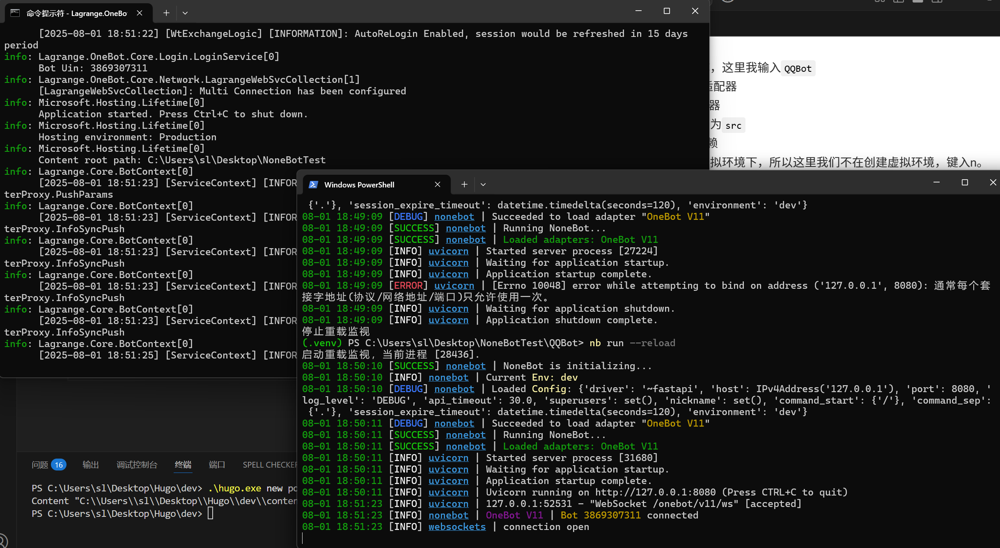

Nonebot + Lagrange 实现自己的QQ机器人
最近看到有一些朋友自己设计了一些QQ机器人用于管理QQ群与增加群活跃度等，于是想着自己研究一下这些东西怎么做，一边研究，一边也写篇文章，分享一下以便大家可以快速上手。
另外，网上其实是有很多相关教程的，但个人感觉不够深入，如果有时间，我希望在这篇文章的后半部分详细深入说一说并加入一些实践案例。
这篇文章主要面对的是Windows系统。Linux与MacOS当然也可以，只是我没有相应的系统，没办法作演示。
搭建
Lagrange 安装
首先，我们安装Lagrange程序。
在Github上找到Lagrange程序，下载最新版本的 Lagrange.Onebot。
【Lagrange.Onebot】
我这里是Windows 11的64位系统，下载如图所示的压缩包。

解压后会得到好多级文件夹，在最里面可以找到我们最关心的 Lagrange.Onebot.exe文件。
将其转移到我们的项目文件夹下。

双击运行程序，程序会启动一个命令行窗口，你将看到如下界面。
 此时，在项目根目录下，
此时，在项目根目录下，Lagrange帮我们生成了一个appsetting.json文件，我们需要对其进行配置，将下面的配置替换到配置文件中。
|
|
关于上面的配置，后面我们可能会进行说明，这里就不做介绍了。
按照要求，配置之后，在命令行窗口中按下任意键继续程序。之后你将看到一个偌大的二维码，你需要使用需要充当机器人的QQ账号扫描二维码进行登录。
 当你看到这些信息时，说明你已经成功登录了。
当你看到这些信息时，说明你已经成功登录了。
 最后，
最后，Lagrange在项目根目录下生成了好多文件。我们暂时不用管。
NoneBot2 安装
注意，我们使用的Python版本要大于等于3.9，如果你没有安装Python，请先安装。如果已经安装python，请使用
|
|
查看版本号。
检查版本号大于等于3.9后，让我们进行接下来的步骤。
创建虚拟环境
在项目的根目录下，使用下面的命令创建虚拟环境。
|
|
创建完成后，我们需要激活虚拟环境。
|
|
激活成功后，你会发现命令行窗口的前缀变成了虚拟环境的名称。  ❓为什么要使用虚拟环境？参阅此处 在这种情况下，我们使用
|
|
理论上返回的包依赖列表中应该只会有pip这一个包。
安装NoneBot2官方脚手架
在激活虚拟环境后，我们使用下面的命令安装NoneBot2。
|
|
安装完成后，我们可以使用下面的命令检查是否安装成功。
|
|
理论上返回的包依赖列表中应该会有nb-cli这个包。
创建项目
使用下面的命令创建项目。
|
|
按照提示，我们依次选择
- simple
- 输出您的项目名称，这里我输入
QQBot - 选择
OneBot V11适配器 - 选择
FastAPI驱动器 - 选择插件存储位置为
src - 键入Y立即安装依赖
- 因为我们已经在虚拟环境下，所以这里我们不在创建虚拟环境，键入n。
- 接下来他会询问选择那些内置的插件，这里我们什么都不选择。 创建成功，你会看到如下界面。  按照提示，我们进入项目目录并启动我们的机器人。
|
|
注意，这里我们需要同时运行lagrange与nonebot。

现在，我们的机器人已经启动成功了！你可以在命令行窗口看到connection open，说明Lagrange已经与nonebot建立了连接。
恭喜你，你已经成功搭建了一个基于NoneBot2的QQ机器人！
测试
在src/plugins目录下新建test.py文件，写入以下内容
|
|
保存后，在有该QQ号的群里发送test，机器人就会回复我启动成功啦！！！，说明我们已经成功搭建好了我们的QQ机器人。
✔️先写这些吧，后续会再进行内容的补充！